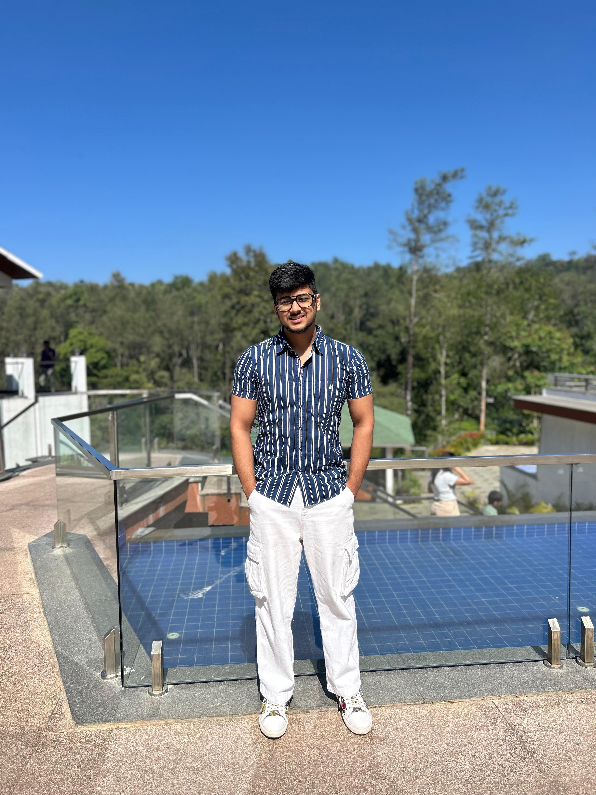

01
B.Tech in Information Technology
2022 - PresentManipal University Jaipur
Currently pursuing my degree with a CGPA of 8.88, while building practical experience in software development, testing, and automation.
Software Developer - Test Automation
I'm Siddhant Garg, a Software Developer focused on Test Automation at G+D. I work on test automation, API testing, and reliable software quality.
01 / ABOUT ME

I'm an IT Engineer passionate about building reliable software and making technology work better.
Currently, I'm working as a QA Intern at Giesecke+Devrient (G+D), where I contribute to testing and automation for the Compass Cash Center project.
My day-to-day work involves Playwright with JavaScript, API testing, Azure DevOps, and understanding how software behaves across different workflows. I enjoy finding issues, improving test coverage, and learning how systems work behind the scenes.
02 / EXPERIENCE
Giesecke+Devrient (G+D)
Working on the Compass Cash Center (CCC) project, a cash management portal. My focus is on functional testing, UI automation, and API automation.
Creating and maintaining automated test cases using Playwright and JavaScript.
Working with API automation, HAR files, and understanding application requests.
Reporting and tracking bugs using Azure DevOps with clear reproduction steps.
Contributing to test case conversion, automation coverage, and QA workflows.
03 / EDUCATION
Manipal University Jaipur
Currently pursuing my degree with a CGPA of 8.88, while building practical experience in software development, testing, and automation.
Delhi Public School, CBSE
Completed senior secondary education with 85% marks, focusing on science and technology.
Modern Delhi Public School, CBSE
Completed secondary education with 87.2%, building a strong academic foundation.
04 / SKILLS & TOOLS
My current toolkit is focused on software testing, automation, and understanding the complete development workflow.
Always learning. Always improving.
05 / PROJECTS
Automated UI workflows and test cases using Playwright and JavaScript, with a focus on reliable and maintainable automation.
A face recognition-based attendance system built to automate attendance using computer vision.
Explored computer vision and machine learning to translate hand gestures into meaningful communication.
06 / BEYOND THE CODE
I'm continuously improving my skills in Playwright, API automation, Git, and software testing. I'm also exploring how AI can help QA teams work smarter and more efficiently.
Let's connect ↗07 / CONTACT
Have a question, an opportunity, or just want to connect? Feel free to reach out.
siddhantgarg962@gmail.com ↗